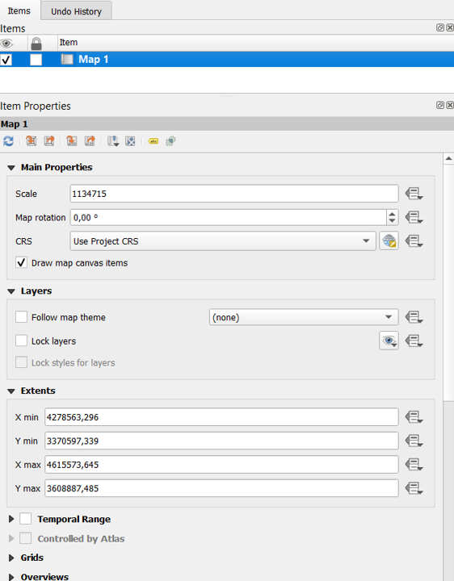
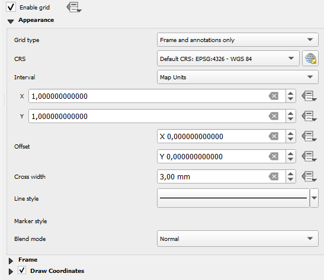
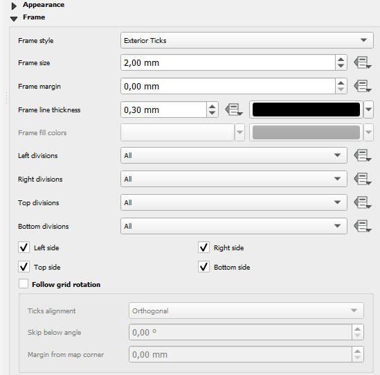
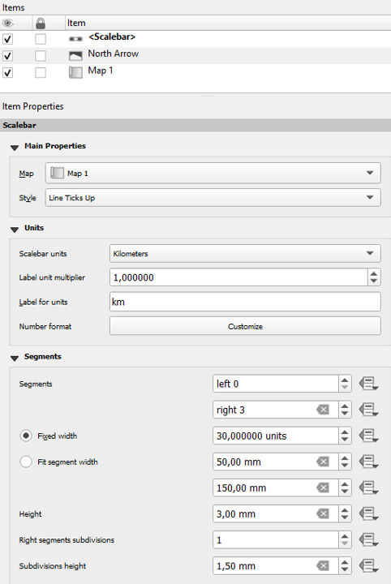
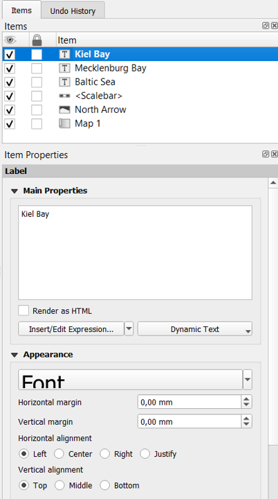
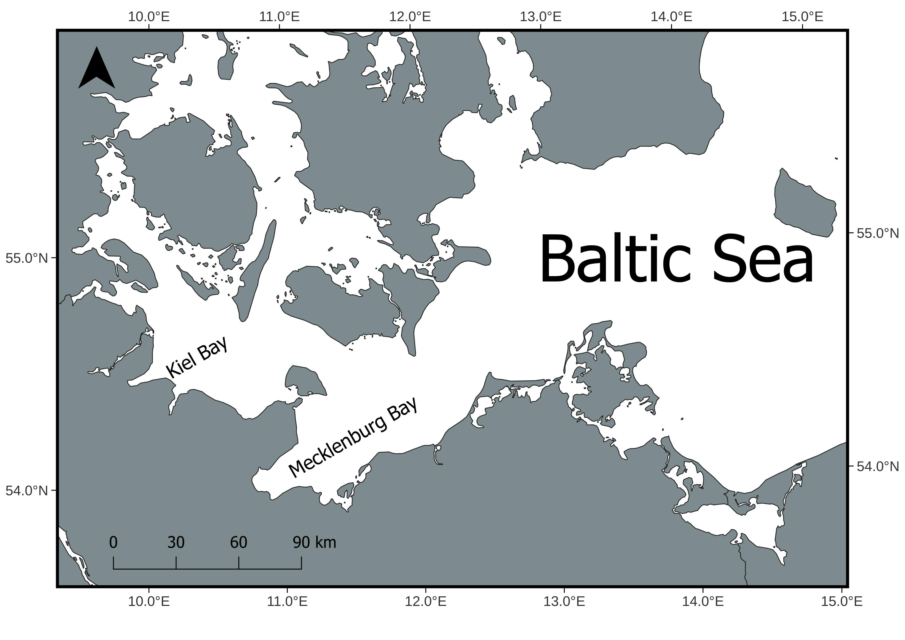

Add annotations and export in QGIS
In this blog post, we’ll explore how to add annotations such as coordinates, north arrow, scale bar and text into a map.
Intro
This post will focus on adding annotations to a map for export, including longitude and latitude markers, a north arrow, a scale bar, and custom text.
Print layout
Open the print layout. Your map should already be present; if not, please refer to the instructions in the previous post. Use the Move Content tool to reposition the map within the layout if necessary.

Grid
First, make sure your map is selected in the Items panel. If you don’t see the panel, you can enable it by going to View > Panels > Items.
With the map selected, open its properties. You can either click directly on the map in the layout or go to View > Panels > Item Properties.
Once in the Item Properties, scroll down to find the Grids section. Here, click Add a New Grid, you should see it appear in the list. After that, click Modify Grid to adjust the settings and display the latitude and longitude coordinates on your map.

Appearance
The settings for the grid can be adjusted according to personal preference, but I typically use Grid Type: Frame and Annotations Only.
Next, I change the CRS to EPSG:4326 so that the coordinates are displayed as longitude (E) and latitude (N).
For the intervals, X = 1 and Y = 1 works well for my scale. Keep in mind that these values may vary depending on the area of study and the level of detail you need.

Frame
For the frame, I prefer to use Frame Style: Exterior Ticks, as it provides a clear and professional look for the coordinate grid.

Coordinates
For the coordinate format, I prefer Decimal with Suffix, and I usually display all coordinates. However, you can choose to hide some, such as the left and right or bottom and left, depending on your preference.
I also like to reduce the Coordinate Precision to 1, if it is suitable for your map’s scale.
To adjust the appearance further, click on Font to change the font size, style, or make any additional formatting adjustments.

Arrow
To add a north arrow, click on the Add Arrow icon, or navigate to Add Item > Add North Arrow.
There are several built-in options to choose from, and you can also use your own custom SVG files by importing them from a directory.

Scale
To add a scale bar, you can either click on the Add Scale Bar icon or go to Add Item > Add Scale Bar.
For this map, I used the following settings: Style set to Line Ticks Up, scalebar units in kilometers with the label km, segments on the right 3, and a fixed width of 30 units.
You can also customize the font size and style by going to Display > Font > Click on Font, which allows you to adjust the appearance of the scale bar labels to match the overall layout.

Label
To add a label, click on the Add Label icon or navigate to Add Item > Add Label, then click on the area of the map where you want the label to appear.
In the Main Properties panel, I changed the text to “Kiel Bay”. Under Appearance, I increased the font size to make it more prominent. Using the Rotation option, I set the angle to -45 to align the label with the map’s features.
I also added two additional labels, “Mecklenburg Bay” and “Baltic Sea”, following the same steps. All labels are displayed in the Items panel, where you can select and modify them as needed.
You can also move and position the text freely within the layout to make it visually balanced with your map and other elements.

Export
As many publications recommend using JPEG, I chose this format for export. In the next window, I set the DPI to 300 to ensure the image meets publication quality standards.
Finally, I exported the map by going to Layout > Export as Image.

Final
This is the final result of the map, complete with annotations added for export, including longitude and latitude markers, a north arrow, a scale bar, and custom text.

I drew inspiration for this approach from this publication.
Next post
In the next post, we will explore how to add vector layers, like the EEZ, and how to include legends.